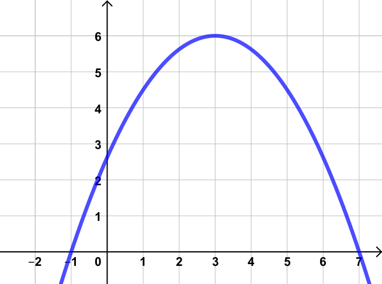

MTH091 Algebraic Literacy
Home
Content
Chapter 1 Real Numbers
1.1 Subsets of Real Numbers
1.2 Operations with Integers
1.3 Operations with Fractions
Chapter 2 Algebraic Expressions
2.1 Algebra Terminology
2.2 The Distributive Property
2.3 Factoring
2.4 Exponents
2.5 Negative Exponents
2.6 Creating and Using Algebraic Expressions
Chapter 3 Elementary Equations
3.1 One-Step Equations
3.2 Solving Multi-Step Equations by Inverse Operations
3.3 Formulas
Chapter 4 Intermediate Equations
4.1 Multi-Step Linear Equations
4.2 Factorable Equations
4.3 The Quadratic Formula
4.4 Special Cases
Chapter 5 Graphing
5.1 The Cartesian Coordinate System
5.2 Slope
5.3 Graphing Linear Equations
5.4 Graphing Quadratic Equations
5.5 Graphing Equations with Technology

Chapter 1 - Real Numbers
1.1 Subsets of Real Numbers
1.2 Operations with Integers
1.3 Operations with Fractions
Chapter 2 - Algebraic Expressions
2.1 Algebra Terminology
2.2 The Distributive Property
2.3 Factoring
2.4 Exponents
2.5 Negative Exponents
2.6 Creating and Using Algebraic Expressions
Chapter 3 - Elementary Equations
3.1 One-Step Equations
3.2 Solving Multi-Step Equations by Inverse Operations
3.3 Formulas
Chapter 4 - Intermediate Equations
4.1 Multi-Step Linear Equations
4.2 Factorable Equations
4.3 The Quadratic Formula
4.4 Special Cases
Chapter 5 - Graphing
5.1 The Cartesian Coordinate System
5.2 Slope
5.3 Graphing Linear Equations
5.4 Graphing Quadratic Equations
5.5 Graphing Equations with Technology